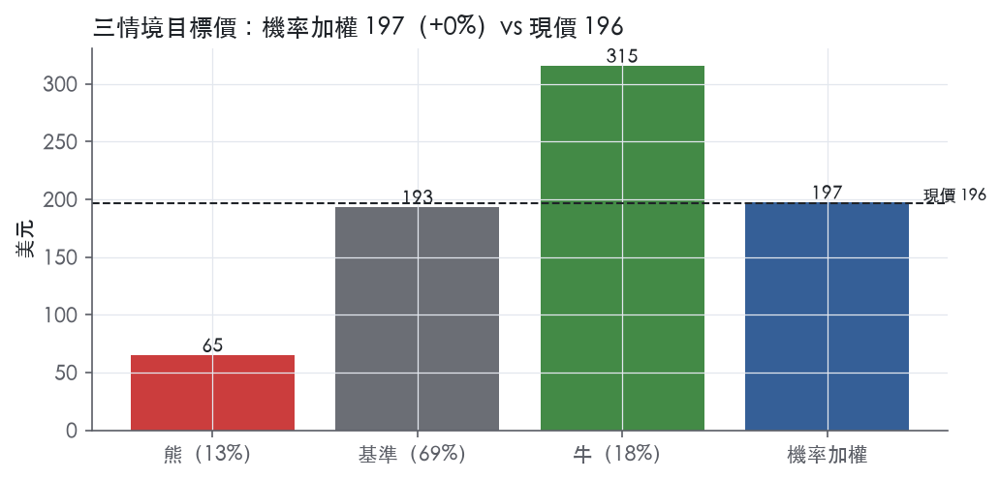
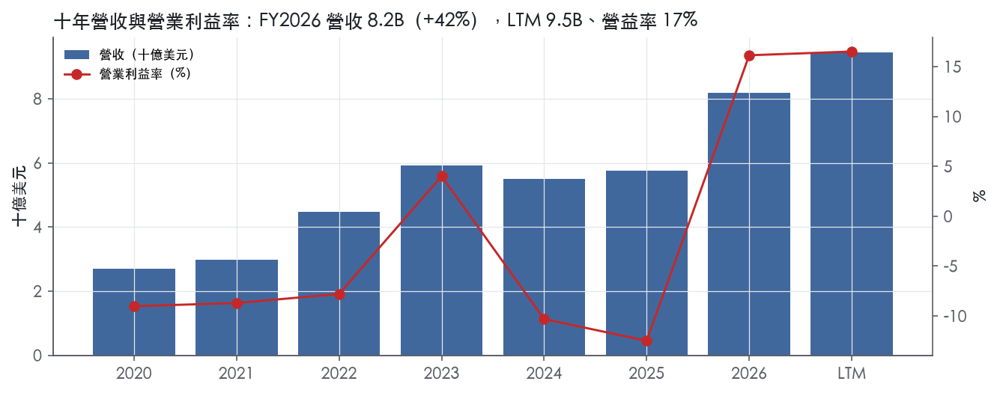
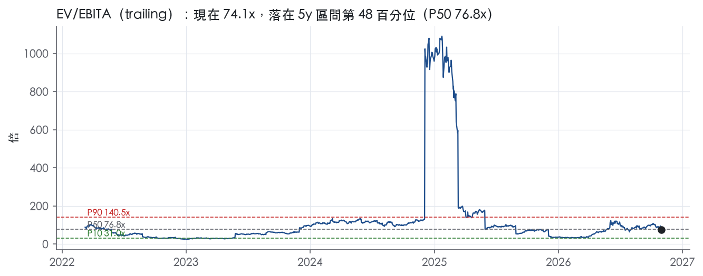
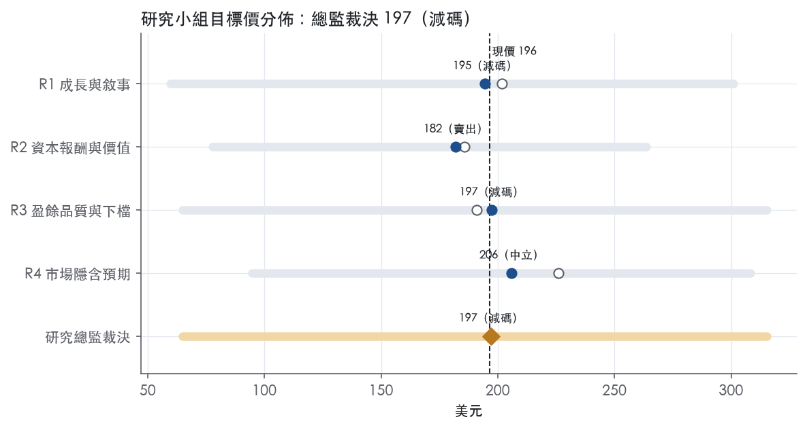
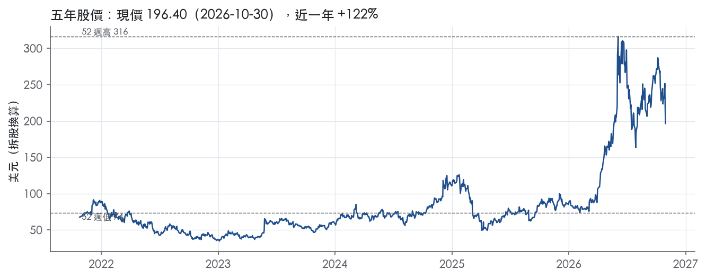

評等總表 › 資訊科技 › MRVL
成長是真的、現價已付足，中性｜評等 減碼｜目標價 197
| 報告日 | 評等 | 目標價 | 當時股價 | 超額報酬 |
|---|---|---|---|---|
| 2026-10-30 | 減碼 | 197 | 196 | -7.5% |
| 評等 | 減碼（邊界，鄰近中立） |
| 12 個月目標價 | 197 美元 |
| 現價 | 196.40 美元（2026-10-30） |
| 預期報酬 | 股價 +0.4%＋股息 0.1%＝總報酬 +0.5%；同業籃門檻 8.0%，超額 -7.5% |
| 估值方法 | EV/EBITA 50.0x，套在第 5–8 季的EBITA（也就是一年後的未來四季） |
| 三情境 | 熊 65／基準 193／牛 315 |
| 研究流程 | 四位研究員兩輪辯論＋研究總監裁決 |
| 資料來源 | SEC EDGAR XBRL、Tiingo、FRED（全免費） |
成長是真的、現價已付足，中性（研究總監裁決，四位研究員兩輪辯論後）
評等 減碼（邊界，鄰近中立）｜12 個月目標價 197 美元（總監三情境機率加權 198 與研究員中位數 196 各半）｜現價 196.40（2026-10-30）
預期報酬：股價 +0.4%＋股息 0.1%＝總報酬 +0.5%。同業籃門檻 8.0%，超額 -7.5%，離中立的分界不到三個百分點，屬邊界評等（落在其他級距的機率約三成）。
估值方法：EV/EBITA 50.0x，套在第 5–8 季的EBITA（也就是一年後的未來四季）。三情境：熊 65（13%）／基準 193（69%）／牛 315（18%）。
立場中性而評等減碼：評等看的是「預期總報酬 0.5% − 同業籃門檻 8.0%」＝超額 -7.5%，不是絕對漲跌；中性但超額偏離門檻，代表情境機率或股利把報酬推離門檻。
什麼會讓研究總監改變看法：2027-03 法說把 FY2028 營收量化到隱含 y2 達 25% 以上且 GAAP 營益率守住 23%，我把 y2 上調到 R4 的 25% 並轉偏多；Q4 指引年增率低於 Q3、2027 年初雲端資本支出指引下修、或 Series A 轉換股數隨股價下跌增加，我轉偏空並把倍數移到帶 P25。
| 過去四季（實際，FY2027Q2） | 未來四季 | 第 5–8 季 | 第 9–12 季 | |
|---|---|---|---|---|
| 營收（B） | 9.5B | 13.7B | 16.4B | 17.9B |
| 營收成長 | 30.6% | 45.0% | 20.0% | 9.0% |
| 營業利益率 | 16.5% | 21.0% | 23.0% | 23.0% |
| EPS（美元） | 3.03 | 2.53 | 3.27 | 3.46 |
| EPS 成長 | — | -16.5% | 29.5% | 5.8% |
| 每股股息（美元） | 0.24 | 0.24 | 0.24 | 0.24 |
| P/E（現價） | 64.9x | 77.7x | 60.0x | 56.7x |
| 股息殖利率（現價） | 0.1% | 0.1% | 0.1% | 0.1% |
過去四季為申報數字；預測為研究總監的假設、程式計算。倍數與殖利率都用現價計算，用來看現價對應各期獲利的高低。
| 情境 | 機率（歷史） | 故事 | 未來四季營收成長 | 第 5–8 季營益率 | 倍數 | 目標價 | 股價漲跌 |
|---|---|---|---|---|---|---|---|
| 熊 | 13%（12%） | 風險表第 3 條 AI 資本支出不可持續疊加第 1、2 條集中度與客戶自研：Q4 指引走平、2027 年初雲端資本支出下修，FY2028 營收衰退，固定成本去槓桿比照 FY2024 | 28.0% | 13.0% | 45.0x | 65 | -66.9% |
| 基準 | 69%（73%） | Q3 照指引、FY2027 下半年續加速，FY2028 降檔至兩成、FY2029 上半個位數，營益率停在 23%，倍數隨減速壓縮至帶 P25–P50 上半 | 45.0% | 23.0% | 50.0x | 193 | -1.8% |
| 牛 | 18%（16%） | Custom 與 1.6T／CPO 同步超出指引，FY2028 展望第三度上調，營業槓桿兌現，倍數回到帶 P50 | 55.0% | 29.0% | 56.0x | 315 | 60.6% |
目標價由程式依研究總監的驅動與倍數計算；機率由研究總監給定。括號內是歷史頻率：把這檔股票過去十年 12 個月報酬的波動形狀，置中在基準情境，結果落在各情境附近的比例。

四位研究員用不同方法各自估值，回應研究總監的質疑後交出第二輪，最後由總監逐點裁決。各研究員的主張見第七章，裁決理由見第八章，完整論證見《研究底稿》。
| 立場（一輪→二輪） | 加權目標價（一輪→二輪） | 評等（一輪→二輪） | 第二輪倍數 | 熊～牛目標價 | |
|---|---|---|---|---|---|
| R1 成長與敘事 | 中性→看空 | 202→195 | 減碼→減碼 | 42.0x | 60～301 |
| R2 資本報酬與價值 | 看空→看空 | 186→182 | 減碼→賣出 | 50.0x | 78～264 |
| R3 盈餘品質與下檔 | 中性→中性 | 191→197 | 減碼→減碼 | 48.0x | 65～315 |
| R4 市場隱含預期 | 看多→中性 | 226→206 | 加碼→中立 | 52.0x | 95～308 |
| 研究總監裁決 | 中性 | 197 | 減碼 | 50.0x | 65～315 |
目標價由程式依各自的驅動與倍數計算；評等＝機率加權總報酬 − 同業籃門檻。
Marvell 是一家無晶圓廠（fabless）半導體公司，提供從資料中心核心到網路邊緣的「資料基礎設施」半導體解決方案¹。公司核心能力是開發與擴展複雜的 SoC 架構，整合類比、混合訊號與數位訊號處理功能，並搭配安全韌體能力¹。客戶主要是 OEM、ODM 以及負責轉售的經銷商¹。公司僅申報一個可報告分部——積體電路的設計、開發與銷售¹，但對外會按兩個終端市場（資料中心、通訊及其他）揭露營收結構¹。簡單講，Marvell 現在是一家靠併購堆出技術棧、主要替雲端巨頭做客製 AI/網路晶片的公司。
雖然財報只有一個會計分部，但營收揭露分成資料中心、通訊及其他兩個終端市場，且資料中心比重正在快速擴大。FY2026（截至 2026-01-31）資料中心營收 6,100.3M，占總營收 74%；通訊及其他營收 2,094.3M，占 26%¹。對照兩年前，FY2024（截至 2024-02-03）資料中心僅占 40%、通訊及其他占 60%¹，顯示結構在兩年內完全翻轉，資料中心已成絕對主力。FY2026 全年營收 8.19B，年增 42.1%，毛利率回升到 51.0%、營益率轉正至 16.1%（年度表）。
產品線方面，公司的核心武器是客製 ASIC——針對 AI、資料中心、運算、網路、電信、儲存及國防應用做客製系統晶片，目前已執行多代 5nm 設計，正在推進 3nm，並開發 2nm 平台¹。互連（Interconnects）產品線涵蓋 PAM／coherent DSP、CPO（共同封裝光學）、LPO、主動電纜 DSP 與 PCIe retimer，用於資料中心內部與資料中心間傳輸¹。乙太網路方案含 Prestera／Teralynx 交換器晶片（Teralynx 容量最高達 51.2Tbps）與 Alaska 實體層收發器¹。此外公司正開發 UALink 與 ESUN 兩類「Scale-Up」交換器矩陣，瞄準新興的 AI 規模擴展網路市場¹。處理器（OCTEON、NITROX）與儲存控制器（Bravera HDD/SSD）則是較傳統的業務線，10-K 未揭露各產品線個別營收占比。
近期兩筆併購強化了互連版圖：Celestial AI 的 Photonic Fabric 光子互連平台，於 FY2026 年末後（2026-02-02）完成收購，現金對價約 1.3B，扣除約 300.0M 取得現金後淨現金對價約 1.0B，並發行約 2,450 萬股普通股，另有依營收里程碑計算的或有對價至 FY2029¹；XConn 提供 PCIe 與 CXL 交換晶片，於 2026-02-10 完成收購，現金對價約 280.0M，並發行約 210 萬股¹。公司亦已於 2025-08-14 以 2.5B 現金出售車用乙太網路業務給 Infineon，FY2026 Q3 認列稅前處分利益 1.8B¹。這代表 Marvell 正主動收斂到「AI 資料中心互連＋客製運算」的敘事，把非核心的汽車業務換成光學／交換連接技術。
客戶集中度持續上升，是這家公司最大的結構性風險之一。FY2026 單一直接客戶（Customer A）占總營收 14%，單一經銷商（Distributor A）占比高達 37%¹；相比 FY2025 該經銷商占 34%、FY2024 僅 24%，集中度逐年攀升¹。公司以直銷團隊為主，輔以北美代理商及美國、歐洲、亞洲的經銷商網路，並預期直銷占比將持續偏高¹。地區與通路細節（如各地區營收占比）10-K 未在本章節揭露，需參照財報附註。人力結構上，公司 FY2026 末員工 7,480 人，美洲占 49%、亞太（含印度）占 42%、歐非中東占 9%¹，反映工程研發重心偏向亞洲與美洲，銷售終端客戶則高度集中於少數雲端巨頭。
過去四個季度营收連續加速成長，AI 資料中心需求是唯一敘事。FY2026Q3（2025-11-01 結束）營收 2.07B、年增 36.8%，GAAP 淨利因汽車業務處分利益跳升至 1.90B（含一次性 1.8B 處分利得）（最近 8 季表）。FY2026Q4（2026-01-31 結束）營收 2.22B、年增 22.1%，毛利率 51.7%、營益率 18.2%（最近 8 季表）。FY2027Q1（2026-05-02 結束）營收創紀錄達 2.418 億美元——不對，應寫 2.418B，年增 28%，GAAP 每股盈餘 0.04 美元，非 GAAP 每股盈餘 0.80 美元，營運現金流 638.8M 創歷史新高²。FY2027Q2（2026-08-01 結束）營收再創紀錄達 2.739B，年增 37%，GAAP 毛利率 53.1%、非 GAAP 毛利率 58.9%，GAAP 每股盈餘 0.33 美元、非 GAAP 每股盈餘 0.94 美元³，其中資料中心營收年增加速至 46%³。公司對 FY2027Q3 的指引為營收 3.150B±5%、GAAP 毛利率 52.9%–53.9%、非 GAAP 毛利率 57.5%–58.5%、GAAP 稀釋每股盈餘 0.53±0.05 美元、非 GAAP 稀釋每股盈餘 1.10±0.05 美元³。整體看，營收成長率從 Q3 的 37% 一路加速到管理層對 Q3 指引隱含的更高增速，而且公司已連續兩季上調全年展望。
CEO Matt Murphy 表示，FY2027Q2 資料中心營收年增加速至 46%，AI 相關訂單依然非常強勁，預期營收成長將在 FY2027 剩餘時間進一步加速，公司因此再次上調 FY2027 與 FY2028 的營收展望³。他並指出，公司在資料中心各產品線呈現全面性的強勁需求，包括連接（Connectivity）業務的強勢需求，以及客製（Custom）業務自 FY2027 下半年起顯著加速³。前一季（Q1）他則強調成長動能來自 800G 與 1.6T 規模擴展光學元件、51.2T 乙太網路規模擴展交換器、用於 NPO 與 CPO 應用的規模擴展光學方案、跨資料中心互連模組，以及客製 XPU 與 XPU-attach 方案²。10-K 層面，公司將 Celestial 收購定位為加速其面向下一代 AI 與雲端資料中心的連接策略¹，並將 XConn 收購定位為擴充交換器產品組合、強化 UALink 規模擴展交換團隊¹。
Marvell 的故事已經從「多元終端市場的通用半導體供應商」轉型為「深度綁定少數超大型雲端客戶的 AI 資料中心客製矩陣＋光學互連供應商」，資料中心占比在兩年內從 40% 衝到 74%，且仍在加速。風險在於單一經銷商占比 37%、直接客戶集中度同步上升，一旦任一雲端客戶的資本支出或自研晶片計畫轉向，營收波動會非常劇烈。目前市場已給出 EV/Sales 19.3x、P/E 64.9x 的高估值，隱含市場完全相信管理層對 FY2027/FY2028 持續加速成長的指引能兌現。

Marvell 目前不具經濟護城河：ROIC 有資料的 5 年中，高於資本成本的年數為 0 年，我們沒有把握它未來能穩定越過這條線。
趨勢判為變寬，理由有二。第一，最新 ROIC 7.0% 已是十年最高。第二，客製晶片與高速互連的設計綁定，正把營收推向黏著度較高的資料中心客戶。
從「變寬」升到「窄」還要過兩關。第一關，ROIC 必須實際越過 10.0% 的資本成本代理值。第二關，Celestial 與 XConn 兩筆新併購帶進的資本，不能再把報酬率拉回去。
有證據的類別只有兩類半：轉換成本是主要來源，無形資產是輔助，效率規模只在 HDD 控制器這個角落成立。成本優勢與網路效應沒有證據，不列。
轉換成本（主要）
Marvell 開發依個別客戶規格量身訂做的客製晶片，建立在含超高速 SerDes、ARM 運算、矽光子與先進封裝的 IP 平台上¹。公司指出，客製化方案的需求持續增加，因為客戶追求更高程度的客製與差異化¹。現場應用工程師會協助客戶設計、測試與驗證採用其產品的系統，公司也常為多年期產品週期維持大量庫存¹。
一顆客製 XPU 或 DSP 一旦設計進雲端客戶的系統架構，在同一代產品內更換供應商的成本極高；這是 Marvell 最實在的黏著來源。弱點是這種黏著只鎖得住「這一代」。公司自己就把「與關鍵客戶設計案的得失」列為風險因素¹。
無形資產（輔助）
截至 2026 年 1 月 31 日，公司在美國及其他國家擁有超過 10,000 件已核准及申請中的專利，到期日介於 2026 至 2046 年¹。但公司也承認，在技術快速變遷下，員工的技術經驗與創新能力可能與專利的法律保護同等重要¹。
專利只是入場券，不是定價權。真正的資產是 SerDes、PAM DSP 與先進製程的設計團隊，而團隊可以被挖角，技術也可以被追上。
效率規模（局部）
Bravera HDD 控制器整合公司的讀取通道技術，目前所有 HDD 製造商都在使用¹。成熟的小市場不值得新進者投入讀取通道研發，這構成效率規模。但 10-K 未揭露這條產品線的營收占比，因此不足以支撐公司層級的評級。
看不到，而且數字與「有護城河」的主張直接衝突；這是我們給「無」而不是「窄」的主因。
ROIC 從未跨過門檻
ROIC 十年平均 -0.3%，最高 7.0%，平均減資本成本為 -10.3%；寬或窄護城河應有的「長期高於資本成本」完全沒有出現。
毛利率是唯一像樣的指標
毛利率十年平均 47.3%、標準差 4.0%、最低 41.3%，代表週期底部仍守得住定價，與轉換成本的主張一致。
營業利益率高度不穩
營業利益率十年平均 -4.0%、標準差 9.6%、最低 -12.5%；毛利優勢扣掉研發與併購攤提之後，並沒有轉化為資本報酬。
現金面較好，但不據此上修
FCF 利潤率十年平均 18.2%、標準差 4.6%，現金面明顯比會計面好看。這顯示 ROIC 偏低有相當部分來自歷次併購墊高的投入資本，而不是現金創造能力差。我們仍不以此替 ROIC 開脫：併購付出的資本是股東真實投入的錢，必須賺回資本成本。
最新 ROE 不能當證據
最新 ROE 19.3%不能用來佐證護城河。原因是 FY2026 第三季認列了出售車用乙太網路業務的稅前處分利益 1.8B 美元¹。
趨勢向上
最新毛利率 51.0% 與 ROIC 7.0% 同為十年最高，FY2027Q2 單季毛利率再升至 53.1%；方向明確向上，所以趨勢給「變寬」。
最大的威脅是客戶自研加上客戶集中，兩者會同時打掉轉換成本這個唯一的支柱。
護城河不支持任何溢價：目標倍數相對同業的基準應為持平，不應因「AI 客製晶片龍頭」的敘事而上調。現行的高倍數只能用成長來解釋，不能用護城河來解釋，因此高於同業的部分應假設持續期短，並在終值階段回歸同業水準。若 ROIC 實際越過資本成本代理值，我們會重新評估是否上調至「窄」，屆時才有理由延長溢價期間。
| 指標 | 最新 | 十年平均 | 標準差 | 最低 | 最高 |
|---|---|---|---|---|---|
| ROIC | 7.0% | -0.3% | 4.0% | -4.1% | 7.0% |
| 毛利率 | 51.0% | 47.3% | 4.0% | 41.3% | 51.0% |
| 營業利益率 | 16.1% | -4.0% | 9.6% | -12.5% | 16.1% |
| FCF 利潤率 | 17.0% | 18.2% | 4.6% | 10.3% | 24.2% |
| ROE | 19.3% | -0.2% | 8.9% | -6.3% | 19.3% |
程式計算。資本成本代理值（10 年債＋5%）：10.0%；ROIC 平均減資本成本：-10.3%；ROIC 有資料的 5 年中，高於資本成本 0 年。
LTM 營業現金流／淨利為 0.83x，近三年平均為 -0.90x、十年平均為 -2.18x，三個窗口都亮黃燈，顯示過去公司常年虧損下現金流其實是正的，但現在轉盈之後現金轉換反而沒跟上淨利成長。LTM 自由現金流／淨利為 0.66x，同樣是黃燈，低於綠燈門檻 0.90x。應計比率 LTM 為 +1.6%，近三年與十年平均都是負值（-6.2%、-6.5%），顯示公司過去靠應計反轉撐出帳面虧損收窄，現在轉為小幅正值但尚未轉紅。FY2026 年度數字看，淨利 2.67B 遠高於 CFO 1.75B 與 FCF 1.40B（資料包年度表），差距主要來自處分業務認列的一次性稅前利益 1.8B¹，這塊利益沒有對應現金流入在同一期的 CFO 科目裡完整反映，是淨利領先現金的主因之一。
FY2027Q2 GAAP 淨利 308.0M、GAAP 稀釋 EPS 0.33 美元；Non-GAAP 淨利 865.9M、Non-GAAP 稀釋 EPS 0.94 美元³，兩者淨利差距約 557.9M。公司揭露的非 GAAP 排除項目包括：股權酬勞費用（SBC）、收購無形資產攤銷、收購與處分相關費用、重組及相關費用（或利益）、或有對價負債與遠期股票購買合約公允價值變動、法律案件解決相關費用，以及管理層認定與核心業務無直接關係之離散事件費用³。公司自己也在新聞稿裡提醒，排除無形資產攤銷不代表這些資產沒有為公司帶來收入貢獻，攤銷未來仍會持續發生，直到資產全數攤銷完畢³。本章判斷：SBC 與無形資產攤銷是真實的經濟成本，不應完全加回評價基礎，因為 SBC 稀釋股東權益、攤銷對應的是真實付出的收購對價；重組費用與或有對價公允價值變動較偏一次性或非經濟性質，可以部分認定為雜訊。年度層面，FY2026 認列的自動化乙太網路業務出售稅前利益 1.8B，以及隨後完成的 Celestial AI 收購（現金約 1.3B，扣除取得現金約 300.0M 後淨額約 1.0B，另加發行約 24.5M 股）與 XConn 收購（現金約 280.0M，另加發行約 2.1M 股）¹，都是明確的一次性交易項目，應從常態盈餘能力中剔除看待。
槓桿偏高是本章最大的疑慮：淨負債／EBITDA 近三年平均為 3.93x，已超過紅燈門檻 3.00x，雖然 LTM 數字缺失，但近三年平均已足以亮紅燈。利息保障倍數 LTM 為 7.21x 尚屬合理，但近三年平均僅 0.01x、十年平均為 -1.09x，亮黃燈，反映公司過去多年營業利益薄甚至虧損、靠現金與舉債撐息。資本配置上，（股利＋回購）／淨利 LTM 高達 79.9%，是本表唯一的綠燈項目，顯示公司把多數當期盈餘回饋股東，但近三年平均為 -19.8%、十年平均為 -47.7%，說明這個高比例是近期轉盈之後才出現，過去長年是負值（即淨利為負、回饋金額相對無意義）。稀釋股數方面，LTM 年變動 +3.1%，近三年平均 +0.7%，十年平均 +4.5%，稀釋股數燈號為紅，加上 Celestial AI 與 XConn 兩筆收購合計再發行約 26.6M 股（24.5M＋2.1M）¹，顯示即便在回購股東回饋比例高的情況下，收購活動仍持續稀釋股東。
SBC／營收 紅燈（LTM 8.8%，近三年平均 9.5%）：這是真問題，不是一次性雜訊，SBC／營收十年平均也有 9.3%，顯示公司長期用股權酬勞作為主要留才工具，而本系統不把 SBC 加回盈餘，估值應承認這部分真實稀釋成本。
淨負債／EBITDA 紅燈（LTM —，近三年平均 3.93x）：真問題，但要分階段看——FY2022–FY2025 期間 EBITDA 偏低或為負，使槓桿比率失真放大（資料包年度表顯示 FY2022 EBITDA 為 -0.08B），FY2026 EBITDA 回升至 2.49B 後槓桿比率應明顯改善，但近三年平均仍反映過去高槓桿、低獲利的結構。
稀釋股數年變動 紅燈（LTM 3.1%，近三年平均 0.7%）：真問題，Celestial AI 與 XConn 兩筆收購合計發行約 26.6M 股¹，疊加既有股權酬勞發放，稀釋壓力在可預期的未來仍會持續，不是一次性。
應收帳款成長比營收快 71 個百分點（FY2026）：需要留意但可部分解釋，FY2026 資料中心營收年增速度極快（資料中心占比從 FY2024 的 40% 升到 FY2026 的 74%）¹，高速成長期應收帳款常態性領先營收成長，加上自動化乙太網路業務出售與兩筆收購交割時點影響應收帳款基礎比較，但增速落差達 71 個百分點仍偏大，建議下一季持續追蹤是否收斂。
淨利率 FY2020→FY2021 跳動 -68pp：可解釋，公司當期處於虧損轉換期（FY2021 淨利 -0.28B），非一次性單一事件所致，屬於業務結構轉型期的正常波動。
淨利率 FY2023→FY2024 跳動 -14pp：可解釋，FY2024 毛利率從 50.5% 降至 41.6%（資料包年度表），加上 SBC／營收上升至 11.1%，屬於營運面與成本結構變化，非單純會計口徑問題。
淨利率 FY2025→FY2026 跳動 +48pp：主因是自動化乙太網路業務出售認列稅前一次性利益 1.8B¹，這是明確的一次性非經常性項目，估值時應予以剔除，不能視為常態盈餘能力的躍升。
估值應以 Non-GAAP 為營運能力參考基準，但要把 SBC 與股數稀釋效果打回來，不能直接拿 Non-GAAP EPS 當作永續盈餘水準。FY2026 GAAP 淨利中有 1.8B 的處分業務一次性利益，估值模型若用 FY2026 GAAP 淨利或 EPS 作為成長基期，必須先扣除此一次性項目，否則會高估常態獲利能力。近三年平均槓桿 3.93x 已達紅燈水準，雖然隨 FY2026 EBITDA 回升可能改善，但在無法確認 LTM 淨負債／EBITDA 的情況下，估值倍數（尤其是本益比、EV/EBITA）應維持謹慎折價，不宜套用同業無槓桿顧慮時的高倍數區間。
| 項目 | LTM | 近三年 | 十年 | 燈號 | 規則 |
|---|---|---|---|---|---|
| 營業現金流／淨利 | 0.83x | -0.90x | -2.18x | 黃 | ≥1.00x 綠、<0.80x 紅 |
| 自由現金流／淨利 | 0.66x | -0.72x | -1.82x | 黃 | ≥0.90x 綠、<0.60x 紅 |
| 應計比率（(淨利−CFO)／平均總資產） | 1.6% | -6.2% | -6.5% | 黃 | ≤0.0% 綠、>5.0% 紅 |
| SBC／營收 | 8.8% | 9.5% | 9.3% | 紅 | ≤3.0% 綠、>8.0% 紅 |
| 淨負債／EBITDA | — | 3.93x | -6.67x | 紅 | ≤1.50x 綠、>3.00x 紅 |
| 利息保障倍數（營業利益／利息） | 7.21x | 0.01x | -1.09x | 黃 | ≥8.00x 綠、<3.00x 紅 |
| 稀釋股數年變動 | 3.1% | 0.7% | 4.5% | 紅 | ≤0.0% 綠、>3.0% 紅 |
| （股利＋回購）／淨利 | 79.9% | -19.8% | -47.7% | 綠 | ≥50.0% 綠、<0.0% 紅 |
| 應收帳款成長 − 營收成長（FY2026） | +70.5pp | — | — | 紅 | ≤5pp 綠、>15pp 紅 |
| 存貨成長 − 營收成長（FY2026） | -7.3pp | — | — | 綠 | ≤5pp 綠、>15pp 紅 |
程式計算；燈號以 LTM（無則近三年平均）判定。
| 風險 | 觸發指標（看什麼數字、在哪裡看） | 對 EPS 的影響方向與粗略幅度 | 未來 12 個月發生機率 | 出處 |
|---|---|---|---|---|
| 客戶／經銷商集中度過高 | 10-K 附註「Concentration of Credit Risk」揭露的前十大客戶占營收比；每季 10-Q 的 10% 以上客戶揭露 | 負向、大：十大客戶占 FY2026 營收 82%，單一經銷商占 37%，任一客戶砍單會直接打掉兩位數營收與對應 EPS⁴ | 中 | 10-K 年報 FY2026 Item 1A（風險因素） |
| 雲端客戶自研晶片（insourcing）取代 Marvell 方案 | 大型雲端客戶自有 ASIC 專案公告、Marvell 客製業務（Custom）營收年增率是否從「加速」轉為「放緩」（下季法說會用詞） | 負向、大：方向明確但官方未給具體百分比 | 中 | 10-K 年報 FY2026 Item 1A（風險因素） |
| AI 資本支出不可持續、客戶砍單/延單 | 下游雲端四大（Hyperscaler）資本支出指引年增率；Marvell 單季營收 QoQ 增速是否低於公司指引下緣（如 FY2027Q3 指引 3.150B±5%） | 負向、大：公司自己承認「目前 AI 基建資本支出水準可能無法長期維持，AI 相關支出大幅減少將損害財務結果」⁴ | 中 | 10-K 年報 FY2026 Item 1A（風險因素） |
| 資料中心終端市場單一化 | 資料中心營收占總營收比（目前 74%，兩年前僅 40%）；每季是否持續擴大 | 負向、大：單一市場波動會直接放大整體營收波動⁴ | 中 | 10-K 年報 FY2026 Item 1A（風險因素） |
| 中國出口管制／關稅與貿易政策變動 | 美國對中國半導體出口管制新規公告日；中國客戶營收占比（財報附註地區揭露） | 負向、中：公司明確列為風險因子，但未提供可量化的營收敞口數字 | 中 | 10-K 年報 FY2026 Item 1A（風險因素） |
客戶集中度是目前最具體、最可監測的風險。FY2026 單一直接客戶占營收 14%、單一經銷商占 37%，十大客戶合計占 82%⁴。這個數字逐年上升（經銷商占比從 FY2024 的 24%、FY2025 的 34% 升到 FY2026 的 37%）⁴，代表公司對少數買家的議價力正在下降，一旦任一客戶財務困難、設計轉單或自行議價壓低單價，營收與毛利率會同時受傷。監測方式很簡單：每季 10-Q 固定揭露 10% 以上客戶名單與占比，這條線一旦某客戶占比不再上升甚至開始下滑，就是訊號。
雲端客戶自研晶片是公司自己在風險因子裡點名的結構性威脅：「部分大型客戶可能開始自行開發半導體方案，可能導致 Marvell 業務流失」⁴。10-K 另花了一整段談 AI 工具降低晶片設計門檻，讓原本不做晶片的科技公司也能自研客製方案，侵蝕 Marvell 的技術/成本優勢⁴。這條風險不容易用單一數字監測，但可以用「Custom 業務營收年增率」這個管理層自己在法說會上強調的指標做代理——公司在 FY2027Q2 法說會上才說 Custom 業務從下半年起「顯著加速」³，一旦這個詞從「加速」變成「持平」甚至「放緩」，就是客戶自研蠶食的訊號。
AI 資本支出週期反轉是宏觀層面但有具體財報落點的風險。10-K 直接寫「目前 AI 基建資本支出水準可能無法長期維持，AI 相關支出顯著減少可能傷害我們的財務結果」⁴，且客戶「未來可能減少或重新配置資本支出用於其他用途」⁴。監測指標是公司自身的單季指引達成率：FY2027Q3 指引營收 3.150B±5%、GAAP EPS 0.53±0.05、非GAAP EPS 1.10±0.05³，若實際數字跌到區間下緣甚至 miss，是資本支出週期轉弱的第一個可觀測訊號。
資料中心單一市場依賴與客戶集中度互為表裡但角度不同——這是「終端市場」而非「客戶」層面的集中。資料中心占營收比從 FY2024 的 40% 暴衝到 FY2026 的 74%⁴，10-K 明白警示「若此終端市場銷售大幅下滑，將大幅減少營收並損害財務狀況與經營成果」⁴。這個比例本身就是每年財報必揭露的數字，可以直接追蹤趨勢是否反轉。
中國出口管制與關稅風險，10-K 用整段篇幅談美中貿易政策、關稅、出口許可對客戶需求的影響⁴，但公司沒有給出具體的中國營收占比或中國客戶占比數字，使這條風險難以精確量化，只能用「美國新出口管制公告日」作為事件型觸發指標。
併購整合與稀釋速度：Marvell 過去一年密集併購（Celestial AI 現金對價約 1.3B + 發行約 2,450 萬股；XConn 現金對價約 280.0M + 發行約 210 萬股）⁴，10-K 僅在一般性風險因子中提到整合風險，但沒有把「稀釋股數持續上升對 EPS 的拖累」當作獨立風險揭露。稀釋股數已從 FY2020 的 0.68B 升到近期約 0.87B（年度表），加上兩筆新併購的股票對價，稀釋速度值得獨立監測，觸發指標是每季稀釋加權平均股數是否持續跳升。
非 GAAP 與 GAAP 盈餘差距擴大：FY2027Q2 GAAP 每股盈餘 0.33 美元、非 GAAP 每股盈餘 0.94 美元³，差距主要來自股票薪酬、併購攤銷等項目。市場若過度依賴非 GAAP 數字評價，一旦公司調整非 GAAP 排除項目的範圍或這些「一次性」項目持續經常化（例如併購攤銷隨併購頻率增加而上升），GAAP／非 GAAP 的落差本身就是一個該被追蹤的風險指標，觸發方式是每季比較兩者差距是否持續擴大。
現價 196.40 對應 trailing（過去四季）P/E 64.9x、EV/EBITDA —、EV/EBITA 74.1x、EV/Sales 19.3x、FCF 殖利率 1.0%。主要估值倍數 EV/EBITA 現在 74.1x，落在5 年區間第 48 百分位（P10／P50／P90 = 31.0x／76.8x／140.5x）。

把程式的機械基準預測放到現價下，市場付的前瞻倍數是：EV/EBITA（未來四季） 95.2x、P/E（未來四季） 121.6x、EV/EBITA（第 5–8 季） 83.4x、P/E（第 5–8 季） 110.0x。反推 DCF 顯示市價隱含未來五年營收年成長 31.4%（WACC 9.0%、終值成長 3.0%、FCF 利潤率 24.1%，SBC 不加回）。
| 倍數 | 現在 | 5 年 P10 | 5 年 P50 | 5 年 P90 | 現在分位 | 全期 P50 |
|---|---|---|---|---|---|---|
| P/E | 64.9x | — | — | — | — | 57.9x |
| EV/EBITA | 74.1x | 31.0x | 76.8x | 140.5x | 48.2% | 76.8x |
| EV/EBIT | 116.5x | — | — | — | — | 158.8x |
| EV/Sales | 19.3x | 7.3x | 10.7x | 19.7x | 88.4% | 11.0x |
| P/S | 19.1x | 6.6x | 10.2x | 19.0x | 90.1% | 10.4x |
| P/FCF | 104.6x | 35.6x | 53.0x | 118.3x | 83.9% | 54.7x |
trailing 倍數（股價 ÷ 過去四季）；分位以每個交易日計算。
同業籃：（手動名單（playbooks/peers.yaml））。評等門檻 —：同業「倍數不變下持有一年」的隱含報酬中位數（＝ FCF 殖利率 ×(1＋g)＋g，g 為 5 年營收年複合成長並夾在 −2%～8%），每家夾在 0～15%、P/E 低於 5 倍視為資料可疑而排除，中位數再限制在 10 年債到 10 年債＋5% 之間。
| 代號 | 市值 | 5 年營收 CAGR | 營益率 | ROIC | P/E | 5 年 P/E 中位數 | EV/EBITDA | P/FCF | 隱含報酬 |
|---|---|---|---|---|---|---|---|---|---|
| MRVL | 180.9B | 22.5% | 16.5% | 7.0% | 64.9x | — | — | 104.6x | 9.0% |
| 同業中位數 | — | — | — | — | — | — | — | — |
全部 trailing，程式以各公司 SEC XBRL 與 Tiingo 行情計算；第一列為本檔。
取數失敗而排除的同業：AVGO（行情兩個來源都失敗 → _tiingo: 429 Client Error: Too Many Requests for）、NVDA（行情兩個來源都失敗 → _tiingo: 429 Client Error: Too Many Requests for）、AMD（行情兩個來源都失敗 → _tiingo: 429 Client Error: Too Many Requests for）、QCOM（行情兩個來源都失敗 → _tiingo: 429 Client Error: Too Many Requests for）、ADI（行情兩個來源都失敗 → _tiingo: 429 Client Error: Too Many Requests for）、MCHP（行情兩個來源都失敗 → _tiingo: 429 Client Error: Too Many Requests for）。
事後實現前瞻倍數帶（EV/EBITA，2021-06-10..2025-09-15）：P10／P50／P90 = 28.2x／56.8x／179.8x。它是每個交易日的股價除以之後四季實際實現的指標；一年後，今天的第 5–8 季正是那時的未來四季，所以這條帶是 12 個月目標價的同口徑倍數。因為用的是事後實際而非當時預期，過去成長超乎預期的公司這條帶會偏低。
程式的機械基準（成長率從過去四季年增率三年收斂到 6%、利潤率持平）用 事後實現前瞻 EV/EBITA P50 估值得到 123（-37.6%），市場現行前瞻倍數（現價 ÷ 基準 未來四季指標）一年後持平，套在基準 第 5–8 季指標得到 205。這兩個數字只是參考點，不是本報告的目標價；研究員對這個定價的回應在第七章。
下表是每位研究員第一輪（各自獨立）與第二輪（回應研究總監的質疑後）的結果。目標價全由程式依各自的假設計算。
| 立場（一輪→二輪） | 加權目標價（一輪→二輪） | 評等（一輪→二輪） | 第二輪倍數 | 熊～牛目標價 | |
|---|---|---|---|---|---|
| R1 成長與敘事 | 中性→看空 | 202→195 | 減碼→減碼 | 42.0x | 60～301 |
| R2 資本報酬與價值 | 看空→看空 | 186→182 | 減碼→賣出 | 50.0x | 78～264 |
| R3 盈餘品質與下檔 | 中性→中性 | 191→197 | 減碼→減碼 | 48.0x | 65～315 |
| R4 市場隱含預期 | 看多→中性 | 226→206 | 加碼→中立 | 52.0x | 95～308 |
| 研究總監裁決 | 中性 | 197 | 減碼 | 50.0x | 65～315 |
目標價由程式依各自的驅動與倍數計算；評等＝機率加權總報酬 − 同業籃門檻。
分歧度：第一輪 加權目標價 186～226（區間＝現價的 21%）· 倍數 42～52x · 立場 中性×2、看空×1、看多×1；第二輪 加權目標價 182～206（區間＝現價的 12%）· 倍數 42～52x · 立場 看空×2、中性×2。

| 研究員 | 第二輪主張 | 堅持的理由 |
|---|---|---|
| R1 成長與敘事 | 偏空，倍數42x；基準營收成長45%、28%、15%。 | 倍數停在過去市場付的下緣，中段被谷底年份的虧損墊高。 |
| R2 資本報酬與價值 | 偏空，倍數50x；營收成長45%、18%、5%，營益率封頂23%。 | 特別股排在普通股前面，股數年增設6%，比其他三人都高。 |
| R3 盈餘品質與下檔 | 中性，倍數48x；基準情境打平現價。 | 熊情境營收衰退10%不改，固定成本去槓桿比照FY2024。 |
| R4 市場隱含預期 | 中性偏多，倍數52x；營收成長45%、25%、15%。 | 市場高估第三到五年的成長，一年後付不出現在的倍數。 |
每位研究員的逐條回應與完整論證見《研究底稿》（MRVL_研究底稿_2026-11-01.docx）。
| 分歧點 | R1 | R2 | R3 | R4 | 什麼資料會分出勝負 |
|---|---|---|---|---|---|
| Q5–Q8 營收成長 | 28%：年增 27.6%→36.5% 加速、FY2028 展望兩度上調 | 18%：ASP 壓力與客戶自研，FY2028Q4 走平 | 20%：展望上調但指引只小幅超標（+18.0M、+39.0M） | 25%：Custom 下半年加速，市場隱含 31.4% 的近兩年偏低 | 2026-12 Q4 指引年增率是否高於 Q3；2027-03 法說是否量化 FY2028 |
| Q5–Q8 營益率 | 26%：費用增速慢於營收 | 23%：ASP 與低價設計服務競爭封頂 | 24%：營業槓桿 | 22%：Custom 組合稀釋、Q3 毛利率指引與 Q2 持平 | FY2027Q4 GAAP 營益率與 Q4 毛利率指引 |
| 目標倍數 | 42x：帶 P25（谷底分母、低利率樣本、護城河無） | 50x：排除兩尾後 P25–P50 偏 P50 | 48x：谷底偏誤與程式口徑互抵 | 52x：帶分母含攤銷、程式 EBITA 不含 | 10-Q 攤銷金額；FY2028 量化後市場付的前瞻倍數 |
| 股數年變動／Series A | 2% | 6%：921M 高於 FY2026 的 0.87B，加特別股 | 3.5%：特別股 12 個月內轉換吸收進股數 | 2% | FY2027Q3 10-Q 特別股附註：規模、轉換價、股息 |
| 熊情境：Q5–Q8 營收與機率 | −5%、20%（歷史 10%） | 0%、18%（歷史 16%） | −10%、12%（歷史 12%） | +10%、19%（歷史 18%） | 2027 年 1–2 月雲端四大資本支出指引；Custom 年增用詞由加速轉放緩 |
Q5–Q8 營收成長：選 R3 的 20%、y3 9%。 四人都接受 y1 45%，分歧在 FY2028 之後。Q5–Q8 橫跨 FY2028 下半與 FY2029 上半，公司只上調過 FY2028 展望、沒有量化³，FY2029 上半沒有任何人有數字。自家週期範本很清楚：FY2022 +50.3%、FY2023 +32.7%、FY2024 −7.0%（dv.revenue_growth），放量後第二年減速很陡。R3 另指出指引只小幅超標（Q1 +18.0M、Q2 +39.0M²），公司給的是準數，展望上調不含保留空間。R1 與 R4 的 25–28% 把目前的加速外推到公司沒給數字的窗口；R2 的 18% 把走平點放在 FY2028Q4，依據只有 10-K 常態性的 ASP 與自研語句，沒有時點證據。不取上緣還有一個理由：股價自 52 週高點 316.43 回到 196.4，2026-10-06 Investor Day 的材料不在資料包，R4 也判定無法分辨是個股或類股。R3 的季度營收紀錄與 R4 並列最準（絕對誤差 1.8%）。
Q5–Q8 營益率：選 R2 的 23%，y1 取 R3／R4 的 21%。 Q3 指引毛利率 52.9%–53.9%、GAAP 營業費用約 1.015B³隱含單季營益率約 21%（第一輪 E1；R4 報告），這是 NTM 的錨。十年 GAAP 營益率峰值只有 FY2026 的 16.1%，指引之上每一個百分點都要證據。R4 的 Custom 組合稀釋是最具體的反證（CEO 說 Custom 下半年顯著加速、毛利率指引與 Q2 的 53.1% 持平），但營收 +45%、+20% 之下費用完全沒有槓桿太嚴；R1 的 26% 假設槓桿全數落袋，而他的營業利益預測系統性偏高 +2.6%，R4 +1.8%，我自己 +0.9%（紀錄表），往下修是對的方向。R2 是唯一偏低（−1.1%）且最準（8.9%）的來源；我的 y2 比 R3 低、槓桿更小，故取 23% 而非 24%，y3 同 23%。
目標倍數：選 R2 的 50x。 事後實現前瞻帶 P25／P50／P75 為 41.3x／56.8x／78.9x。上半段被 FY2024–25 谷底分母灌高（營益率 −10.3%、−12.5%，dv.op_margin），四人都落在 P25–P50。往區間上半推的是口徑：程式前瞻 EBITA 等於營業利益（基準表 NTM 兩欄同為 1.91B），而 LTM EBITA 2.45B 含攤銷，帶的分母也是含攤銷的實現值；同一名目倍數套在程式口徑上，對應的是帶上更低的分位，Celestial／XConn 新增攤銷後差距還會擴大。壓在 P50 之下的是個股因素：護城河章評「無」、ROIC 7.0% 低於 10.0%、一年後市場面對的是 Q9–Q12 只剩 9% 的成長。R4 的 52x 對最後一點權重不夠；R3 的 48x 把口徑差與谷底偏誤當完全互抵，但谷底偏誤已用「不取上半段」處理過一次。R1 的 42x 退回：「樣本含低利率年份」違反利率不重複計算原則，刪掉後剩下的理由分不出 P25 與區間上半的差別。相對市場持平倍數 95.2x：那是套在機械基準 NTM EBITA 1.91B 上的數字，我的 NTM 指標遠高於它，50x 代表的是成長由 45% 降到 20% 的壓縮，不是腰斬。請程式組核實前瞻 EBITA 是否該補回攤銷。
股數與 Series A：選 R3 的 3.5%。 R2 的 6% 重複計算：Q3 指引的稀釋股數 921M 與現價、市值對應的股數基準一致，已含 Celestial／XConn 的約 26.6M 股（財務體質章）；他拿 FY2026 平均 0.87B 比，比的是併購前。往後的稀釋是 SBC 淨買回（十年平均 +4.5%、LTM +3.1%，財務體質章）加特別股轉換，R1／R4 的 2% 漏了後者。特別股是普通股之前的請求權，程式淨負債 1.03B 沒扣它，R3 用股數吸收是現有工具下最好的處理；對帳同第一輪 Q1（現金 2.64B→3.84B、債務持平、FCF 0.48B、併購淨現金約 1.0B 加 280.0M），量級相對 EV 181.95B 很小。
熊情境與機率：選 R3。 R4 的熊 Q5–Q8 仍成長 10%、營益率 17%，那是消化不是反轉，與他自己寫的「AI 資本支出週期反轉」不符；R2 的走平居中；R1 與 R3 同為衰退，R3 多了 GAAP 營業費用約 1.015B／季的固定成本依據與 FY2024 範本。機率回到歷史頻率：集中度（十大客戶 82%、經銷商 37%）與資料中心 74% 是真的，但 FY2024 去槓桿已在樣本內、股價已自高點大幅回落、R1 拿來加熊機率的事實 R3 已用來壓 y1，再用一次是重複計算；R4 說結構與樣本期不同但沒有量化。本研究部 22 份報告熊皆高於牛，這檔股票在這組距離下的歷史頻率牛高於熊，我不延續這個偏誤。
漂移與總經偏離。 R1 向中位數靠攏 66%、R3 60%、R4 57%，但每一步都對應我附證據的意見（R1 的熊情境重建與 FY2024 範本、R4 的營益率下修與十年峰值、R3 的機率校準），R2 反向移動；沒有無證據的靠攏，drift_rejections 為空。四人的 macro_deviations 皆空，無需裁決；R1、R2 牛情境引用本行上行路徑 10 年期 4.60 屬允許用法。總經敏感度 10 年期 t 值 −0.8 不可靠，本行前提 4.98 不動，倍數以現值為準。
與機械基準不同的驅動：
目標倍數 EV/EBITA 50x，期間 第 5–8 季，與事後實現前瞻帶同口徑、不換算，位置在 P25–P50 的上半（裁決三）。同業籃無資料，不做相對同業調整；護城河章「相對同業持平、溢價期短」與此一致。
程式對 R3 同一組牛熊情境算出的歷史頻率為 16%／73%／12%（R3 結果表），我的牛熊情境與他相同、基準接近，以此為起點。
差在倍數的耐久度，不在盈餘：我們的 NTM 與 Q5–Q8 EBITA 都遠高於機械基準，市場隱含的 5 年 31.4% 成長在前兩年甚至偏低，但市場把現在的前瞻倍數延續到成長降到兩成的那一年，我們認為一年後付得出的是 50x。基準情境大約打平現價、分布依歷史大致對稱，機率加權總報酬只有低個位數，過不了 8% 門檻；評等會落在中立到減碼之間，立場仍是中性——我們不預期方向性下跌，只是現價已付足，而沒被補償的風險是 Series A 條款與 Investor Day 之後 FY2028 展望的真實水準。
現價 196.40 → 點估目標價 193 → 機率加權目標價 198 → 目標價 197，差距拆成五段：成長順延 +9 美元（市場現行倍數 95.2x 一年後持平、獲利照機械基準）；倍數差 -97 美元（總監倍數 50.0x vs 市場持平倍數 95.2x，同一機械基準預測）；盈餘差 +85 美元（總監預測的第 5–8 季EBITA 3.8B vs 機械基準 2.2B，同一倍數）；情境不對稱 +5 美元（機率加權減點估）；研究小組平均 -1 美元（總監機率加權 198 與研究員第二輪中位數 196 各半）。各段相加等於目標價減現價。本階段未接賣方共識，差距以市場隱含預期為對照。
| 驅動 | 機械基準 | 研究總監 | 差異 |
|---|---|---|---|
| 未來四季營收成長 | 22.4% | 45.0% | +22.6 pp |
| 第 5–8 季營收成長 | 14.2% | 20.0% | +5.8 pp |
| 第 9–12 季營收成長 | 6.0% | 9.0% | +3.0 pp |
| 未來四季營益率 | 16.5% | 21.0% | +4.5 pp |
| 第 5–8 季營益率 | 16.5% | 23.0% | +6.5 pp |
| 第 9–12 季營益率 | 16.5% | 23.0% | +6.5 pp |
| D&A／營收 | 14.2% | 11.0% | -3.2 pp |
| 資本支出／營收 | 5.0% | 5.0% | ＝ |
| SBC／營收 | 8.8% | 8.8% | ＝ |
| 稅率 | 10.0% | 11.0% | +1.0 pp |
| 股數年變動 | 5.0% | 3.5% | -1.5 pp |
研究總監只寫偏移，未寫的沿用基準。
| 期 | 營收 | 成長 | 營益率 | 營業利益 | EBITDA | EBITA | 淨利 | EPS | FCF | 期末淨負債 |
|---|---|---|---|---|---|---|---|---|---|---|
| 未來四季 | 13.7B | 45.0% | 21.0% | 2.9B | 4.4B | 2.9B | 2.4B | 2.53 | 4.4B | -1.3B |
| 第 5–8 季 | 16.4B | 20.0% | 23.0% | 3.8B | 5.6B | 3.8B | 3.2B | 3.27 | 5.6B | -4.8B |
| 第 9–12 季 | 17.9B | 9.0% | 23.0% | 4.1B | 6.1B | 4.1B | 3.5B | 3.46 | 6.1B | -8.8B |
程式依上表的驅動計算；季度用最近四季季節性分攤；不含營運資金變動。
估值方法：EV/EBITA 50.0x，套在第 5–8 季的EBITA（也就是一年後的未來四季）。研究總監目標倍數的錨：事後實現前瞻 EV/EBITA 帶 P25 41.3x–P50 56.8x 的上半：上半段被 FY2024–25 谷底分母灌高故不取 P50 以上；程式前瞻 EBITA 不含攤銷而帶分母含攤銷，名目倍數應偏區間上緣；護城河無、ROIC 7.0% 低於 10.0%、Q9–Q12 成長降至 9% 壓在 P50 之下。
計算：EBITA（第 5–8 季） 3.8B × 50.0x＝EV 189.1B，減未來四季期末淨負債 -1.3B＝權益價值 190.4B，除以第 5–8 季的股數 → 點估目標價 193（-1.8%）；隱含 P/E（未來四季）76.3x、P/E（第 5–8 季）59.0x、EV/EBITDA（第 5–8 季）33.8x、FCF 殖利率（第 5–8 季）2.9%。
總監三情境機率加權目標價 198，研究員第二輪中位數 196，兩者各半＝目標價 197；預期報酬 股價 +0.4%＋股息 0.1%＝總報酬 +0.5%；減評等門檻 8.0%（絕對門檻 8%（沒有同業籃資料））＝超額報酬 -7.5% → 評等 減碼（超額 >+15% 買進、+5～+15% 加碼、±5% 中立、−5～−15% 減碼、<−15% 賣出）。同一份資料重開研究小組，超額約有正負四個百分點的雜訊（一個標準差，二十檔實測）；以此估計，評等落在其他級距的機率約三成。超額離中立的分界不到三個百分點，應視為邊界評等。
| 情境 | 機率 | 未來四季成長 | 第 5–8 季成長 | 第 5–8 季營益率 | EBITA（第 5–8 季） | 倍數 | 目標價 |
|---|---|---|---|---|---|---|---|
| 熊 | 13% | 28.0% | -10.0% | 13.0% | 1.4B | 45.0x | 65 |
| 基準 | 69% | 45.0% | 20.0% | 23.0% | 3.8B | 50.0x | 193 |
| 牛 | 18% | 55.0% | 30.0% | 29.0% | 5.5B | 56.0x | 315 |
| 主張 | 驗證日 | 看哪個數字 | 門檻 |
|---|---|---|---|
| FY2027Q3 營收不低於指引中值 | 2026-12-10 | >= 3.150B | |
| FY2027Q4 營收指引中點隱含年增率不低於 FY2027Q3 實際年增率 | 2026-12-15 | Q4 指引中點年增率 vs | Q4 指引年增率 >= Q3 實際年增率 |
| FY2027Q4 GAAP 營益率不低於 21% | 2027-03-15 | >= 21% | |
| Series A 可轉換為普通股且清算優先額不超過 2.5B | 2026-12-15 | FY2027Q3 10-Q 特別股附註 | 含普通股轉換條款；清算優先額 <= 2.5B（假設上限） |
| LTM 營收年增不低於 45% | 2027-09-10 | >= 45% |
到期由程式結算（第 5 階段帳本）。
內文上標數字對應下列公司申報文件；未標上標的分析與判斷，是研究小組的觀點。報告中的每個數字都經程式逐一核對資料包或原文。
| 期 | 營收 | 成長 | 毛利率 | 營益率 | EBITDA | 淨利 | EPS | CFO | FCF | ROIC | 淨負債 | 稀釋股數 |
|---|---|---|---|---|---|---|---|---|---|---|---|---|
| FY2020 | 2.7B | — | 50.3% | -9.0% | -0.1B | 1.6B | 2.34 | 0.4B | 0.3B | — | — | 0.7B |
| FY2021 | 3.0B | 10.0% | 50.1% | -8.7% | -0.1B | -0.3B | -0.41 | 0.8B | 0.7B | — | 0.6B | 0.7B |
| FY2022 | 4.5B | 50.3% | 46.3% | -7.8% | -0.1B | -0.4B | -0.53 | 0.8B | 0.7B | -2.1% | 4.0B | 0.8B |
| FY2023 | 5.9B | 32.7% | 50.5% | 4.0% | 0.5B | -0.2B | -0.19 | 1.3B | 1.1B | 0.8% | 4.2B | 0.9B |
| FY2024 | 5.5B | -7.0% | 41.6% | -10.3% | 0.7B | -0.9B | -1.08 | 1.4B | 1.0B | -3.0% | 3.2B | 0.9B |
| FY2025 | 5.8B | 4.7% | 41.3% | -12.5% | 0.5B | -0.9B | -1.02 | 1.7B | 1.4B | -4.1% | 3.1B | 0.9B |
| FY2026 | 8.2B | 42.1% | 51.0% | 16.1% | 2.5B | 2.7B | 3.07 | 1.8B | 1.4B | 7.0% | 2.3B | 0.9B |
SEC XBRL；每股數據已依拆股換算到現在股數基準。EBITDA 空白 = 該年無形攤銷在 companyfacts 中缺 tag。
| 期 | 期末 | 推導 | 營收 | 毛利率 | 營益率 | EBITDA | 淨利 | EPS | CFO | FCF | 現金 | 總債務 |
|---|---|---|---|---|---|---|---|---|---|---|---|---|
| FY2024Q3 | 2023-10-28 | 1.4B | 38.9% | -10.3% | — | -0.2B | -0.19 | 0.5B | 0.4B | 0.7B | 4.2B | |
| FY2024Q4 | 2024-02-03 | Q4 | 1.4B | 46.6% | -2.3% | — | -0.4B | -0.46 | 0.5B | 0.5B | 1.0B | 4.2B |
| FY2025Q1 | 2024-05-04 | 1.2B | 45.5% | -13.1% | — | -0.2B | -0.25 | 0.3B | 0.2B | 0.8B | 4.1B | |
| FY2025Q2 | 2024-08-03 | 1.3B | 46.2% | -7.9% | — | -0.2B | -0.22 | 0.3B | 0.3B | 0.8B | 4.1B | |
| FY2025Q3 | 2024-11-02 | 1.5B | 23.0% | -46.4% | — | -0.7B | -0.78 | 0.5B | 0.5B | 0.9B | 4.1B | |
| FY2025Q4 | 2025-02-01 | Q4 | 1.8B | 50.5% | 12.9% | — | 0.2B | 0.23 | 0.5B | 0.4B | 0.9B | 4.1B |
| FY2026Q1 | 2025-05-03 | 1.9B | 50.3% | 14.3% | — | 0.2B | 0.20 | 0.3B | 0.2B | 0.9B | 4.2B | |
| FY2026Q2 | 2025-08-02 | 2.0B | 50.4% | 14.5% | — | 0.2B | 0.22 | 0.5B | 0.4B | 1.2B | 4.5B | |
| FY2026Q3 | 2025-11-01 | 2.1B | 51.6% | 17.2% | — | 1.9B | 2.20 | 0.6B | 0.5B | 2.7B | 4.5B | |
| FY2026Q4 | 2026-01-31 | Q4 | 2.2B | 51.7% | 18.2% | — | 0.4B | 0.46 | 0.4B | 0.3B | 2.6B | 5.0B |
| FY2027Q1 | 2026-05-02 | 2.4B | 52.1% | 14.0% | — | 0.0B | 0.04 | 0.6B | 0.5B | 3.8B | 5.0B | |
| FY2027Q2 | 2026-08-01 | 2.7B | 53.1% | 16.8% | — | 0.3B | 0.33 | 0.6B | 0.5B | 3.9B | 5.0B |
流量項目由 10-Q 的年初至今數拆成單季；Q4 = 年度 − 九個月。

本報告由 equity-desk 多代理系統產出，建置中版本，僅供內部研究與方法驗證，不構成投資建議。所有數字以 datapack.json 為準。